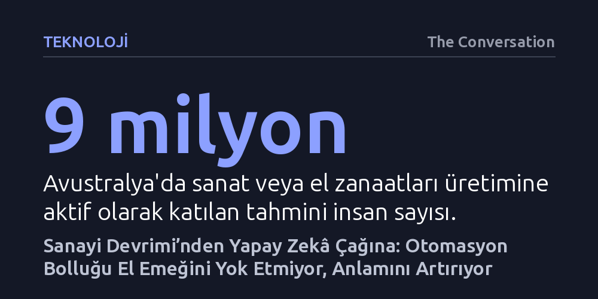

TEKNOLOJI · The Conversation · 2026-09-11
Sanayi Devrimi'ndeki makineleşme dalgasında olduğu gibi, yapay zekâ çağında da otomasyon bolluğu el sanatlarına ilgiyi yok etmeyip aksine canlandırıyor. Dijital ekrandan kaçan insanlar, algoritmaların taklit edemediği ince motor becerilerini, onarma kültürünü ve somut üretimin sağladığı tatmini el emeğinde buluyor.
Yapay zekânın her işi devralacağı endişesine karşılık, geçmişteki otomasyon dalgalarının insanı zanaattan koparmadığını, aksine elle üretmenin sunduğu dokunsal direncin ve yaratıcılığın yerini hiçbir algoritmanın alamayacağını gösteriyor.

Yapay zekânın iş gücü piyasalarını altüst edeceği ve kitlesel işsizliğe yol açacağı yönündeki öngörüler tüm dünyada ciddi bir tedirginlik yaratıyor. İnsanlar algoritmaların hızla yetkinleştiği bir çağda mesleklerinin geleceğini sorgularken, madalyonun diğer yüzünde çok farklı bir toplumsal eğilim yükseliyor: İnsanlar nesneleri kendi elleriyle üretmeye hiç olmadığı kadar güçlü bir arzuyla sarılıyor. Yorgan dikiminden örgüye, çömlekçilikten ahşap oymacılığına kadar yüzyıllardır süregelen kadim el işleri, özellikle genç kuşaklar arasında beklenmedik bir rönesans yaşıyor.
Bu canlanma yalnızca geçici bir heves ya da nostaljik bir kaçıştan ibaret değil. Avustralya'da yayımlanan Ulusal Sanata Katılım Anketi verilerine göre yaklaşık 9 milyon insan aktif olarak bir sanat ya da zanaat faaliyetiyle uğraşıyor; bu alanda görsel sanatlar ve el işleri açık ara önde gidiyor. Üstelik mesele sadece boş zaman değerlendirmesiyle sınırlı kalmıyor; taş işçiliğinden seramiğe, bilimsel alet yapımından modaya kadar iş gücünün yüzde 1,1'ini oluşturan 116 binden fazla insan geçimini doğrudan el ustalığına dayalı mesleklerden kazanıyor. Dijitalleşmenin her alanı sardığı bir dönemde zanaat, ekonomik ve insani varlığını kararlılıkla koruyor.
Makinelerin insan emeğini tehdit ettiği endişesi günümüze özgü değil; kökleri 18. yüzyıl Sanayi Devrimi’ne kadar uzanıyor. 1785 yılında Edmund Cartwright buharlı dokuma tezgâhının ilk patentini aldığında, tekstil sektörünü kökten değiştirecek ve on binlerce dokumacının hayatını altüst edecek bir sürecin kapısını aralamıştı. Makineleri kırarak tepkilerini dile getiren Ludditler, bugün haksız yere yalnızca teknoloji düşmanı dar görüşlüler olarak anılsalar da itirazlarında haklıydılar: Hızlı sanayileşme birçok işçinin ve yerel topluluğun yaşamını fiilen yıkıma uğratmıştı.
Ancak sanayileşmeye verilen tepki yalnızca siyasi ve ekonomik protestolarla sınırlı kalmadı; çok güçlü bir kültürel ve estetik başkaldırıya dönüştü. 19. yüzyılın sonlarında İngiltere’de filizlenen Arts and Crafts hareketi, fabrikaların sunduğu ucuz, niteliksiz ve ruhsuz bolluğu açıkça reddetti. Doğasına ve insan ölçeğine uygun üretime dönmeyi savunan bu akımın temel felsefesi, William Morris’in 'Evinizde yararlı olduğunu bilmediğiniz ya da güzel olduğuna inanmadığınız hiçbir şeyi barındırmayın' ilkesinde somutlaştı. Günümüzde yapay zekâ tarafından üretilen sınırsız dijital içeriğe karşı duyulan doygunluk, geçmişte fabrikasyon ürünlere karşı sergilenen bu estetik tepkiyle büyük bir paralellik taşıyor.
El sanatlarına yönelik bu yoğun ilgi, perakende sektörünü ve tüketim kültürünü de yeniden şekillendiriyor. Avustralya'da 80 yılı aşkın süredir faaliyet gösteren dev tuhafiye zinciri Lincraft'ın tüm fiziksel mağazalarını kapatması gibi krizler yaşansa da, bu durum zanaatın gerilediğini göstermiyor. Aksine, tekdüze zincir mağazalar yerlerini yüksek kaliteli, yerel ve özel malzemeler sunan butik dükkânlara bırakıyor. Çevrim içi pazaryeri Etsy’de 20 yıldır en çok satan mağazaların zanaat malzemeleri sunan dükkânlar olması da bu dönüşümün kalıcılığını kanıtlıyor.
Dahası, genç nesiller el işlerine tasarruf mecburiyetinden değil, bilinçli yaşam tercihlerinden ötürü yöneliyor. Saatlerce telefona bakıp olumsuz haber tüketme sarmalından (doomscrolling) bunalan gençler, ekranı kapatıp bir araya gelerek birlikte üretmeyi ve sosyalleşmeyi tercih ediyor. Hacmi 550 milyon Avustralya dolarını aşan tuhafiye pazarı; hazır giyim tüketmek yerine var olan kıyafetleri tamir eden, dönüştüren ve sürdürülebilir bir yaşamı savunan bu yeni bilinçle besleniyor. İnsanlar satın almak yerine onarmanın getirdiği tatmini yeniden keşfediyor.
Zanaatın insan ruhundaki kalıcı cazibesi, işleri 'eski yöntemle' yapmanın getirdiği maddi sürtünmede gizli. Ham bir malzemeyi alıp biçimlendirmek; sabır, dikkat ve doğrudan fiziksel temas gerektiriyor. Maddi dünyayla böylesi somut ve insani bir bağ kurmak, bireye endüstriyel üretim bantlarının ya da soyut algoritmaların asla veremeyeceği bir öznellik ve kontrol duygusu kazandırıyor. Bir nesneyi hazır almak yerine saatlerce emek vererek üretip birine hediye etmek, o hediyeyi sıradan bir tüketim nesnesi olmaktan çıkarıp nesiller boyu aktarılabilecek bir aile bağına ve derin bir anlama dönüştürüyor.
Yapay zekânın zihinsel ve yaratıcı görevleri taklit edebildiği bir çağda, el becerisinin geleceği şaşırtıcı biçimde daha güvenli duruyor. Çünkü zanaat; yalnızca soyut veri işlemeyi değil, insanın bedenine kazınmış ince motor becerilerini, dokunsal sezgiyi ve somut malzemeyle mücadele etmeyi gerektiriyor. Yapay zekâ fırtınası iş dünyasını yeniden tanımlarken, insanın maddeye dokunma, onu sabırla dönüştürme ve el emeğiyle anlam üretme ihtiyacı yerinde duruyor; hatta otomasyon çağında insanın varoluşunu kanıtlayan en sahici sığınak haline geliyor.